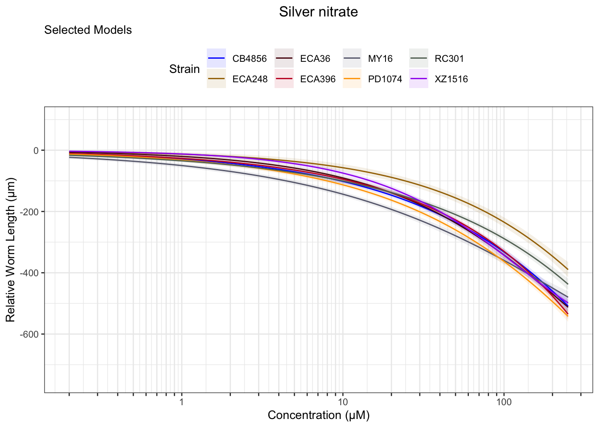
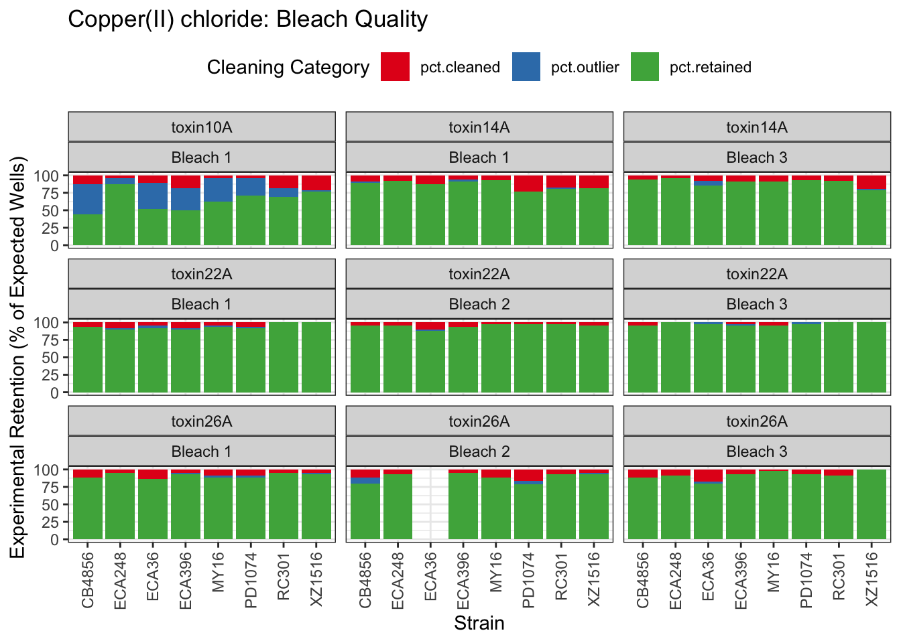
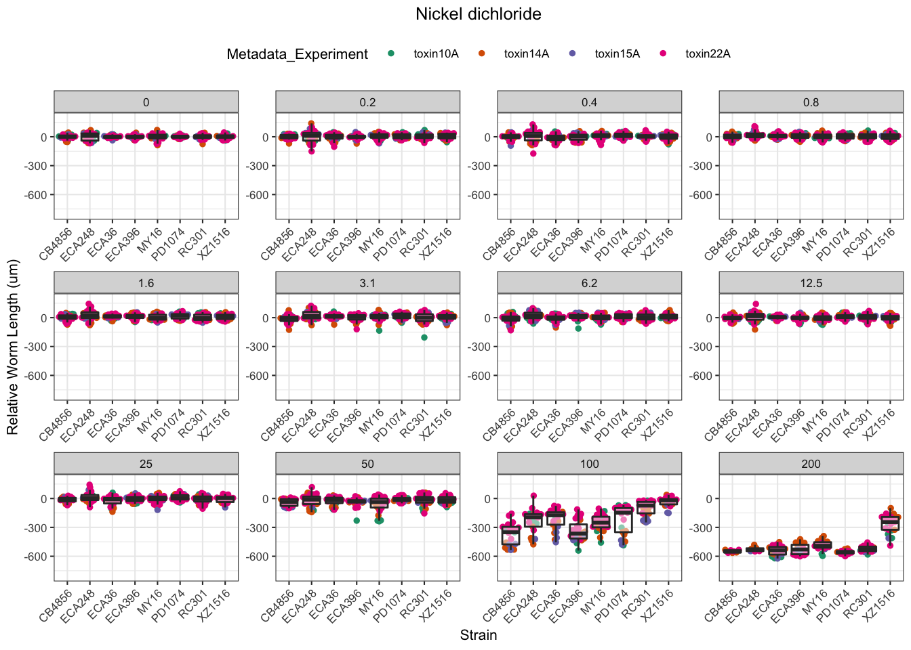
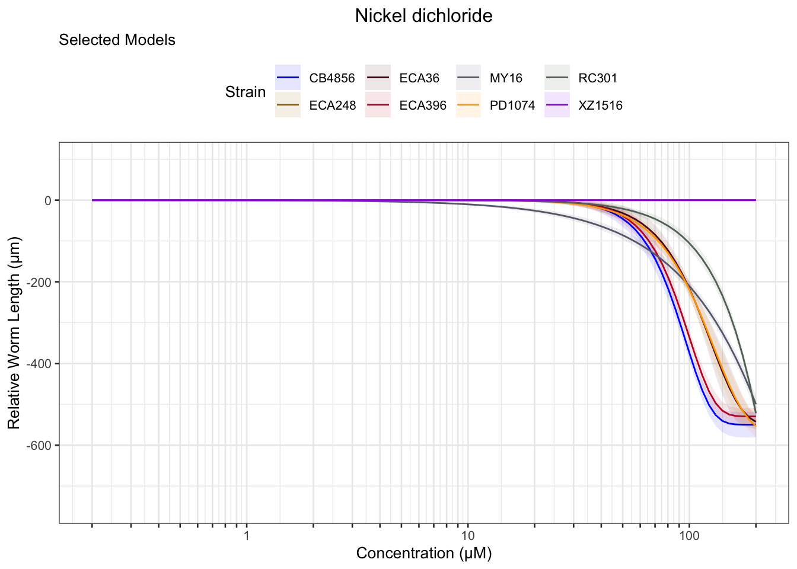
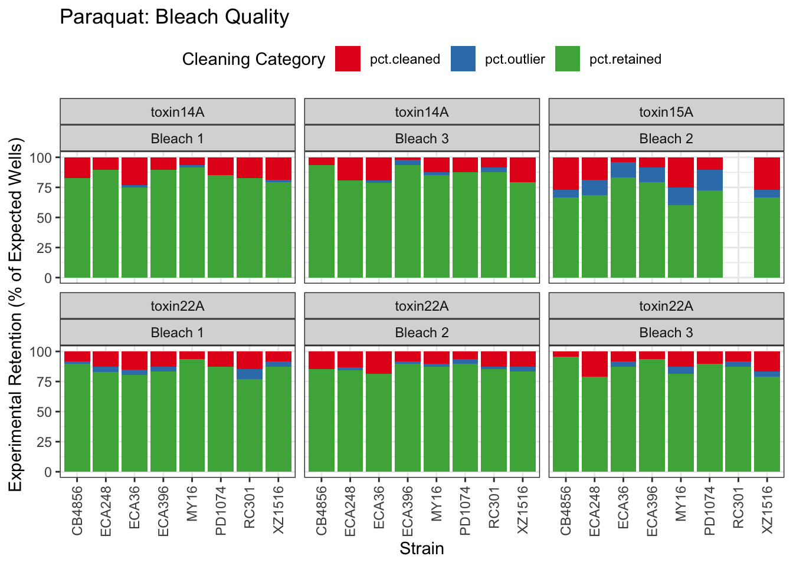
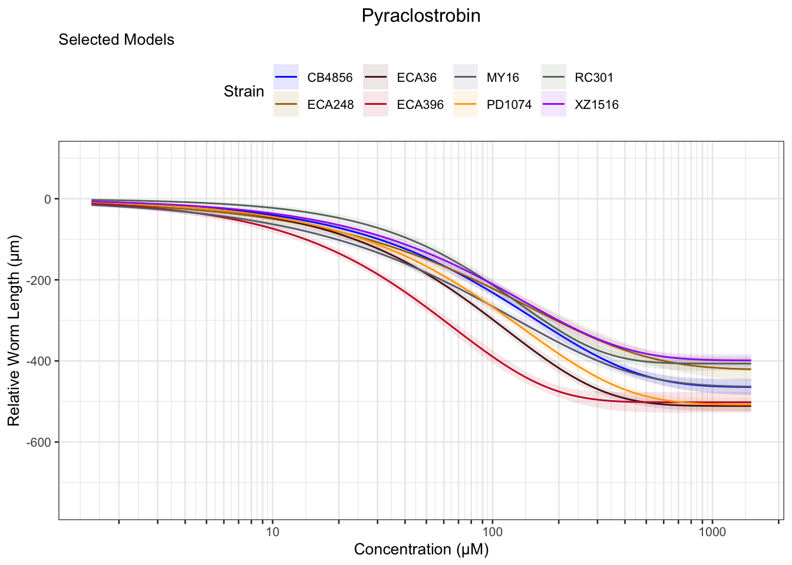
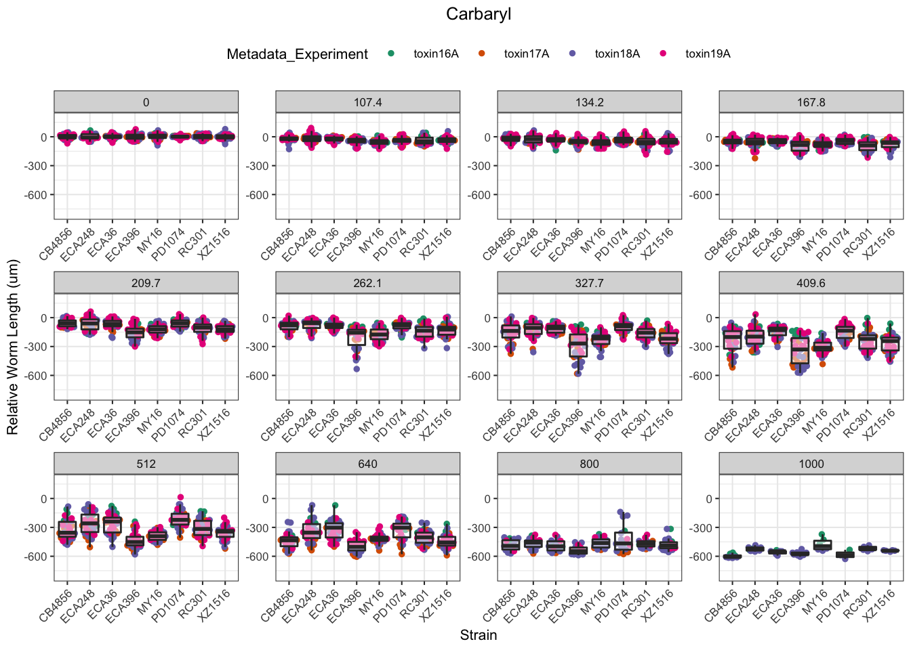
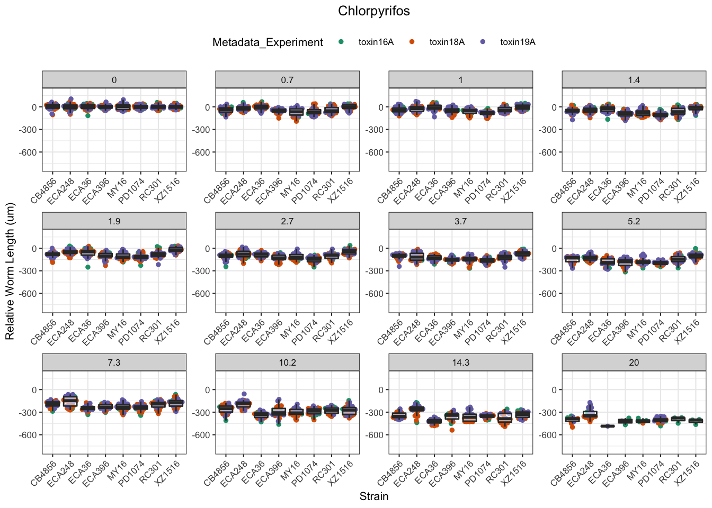
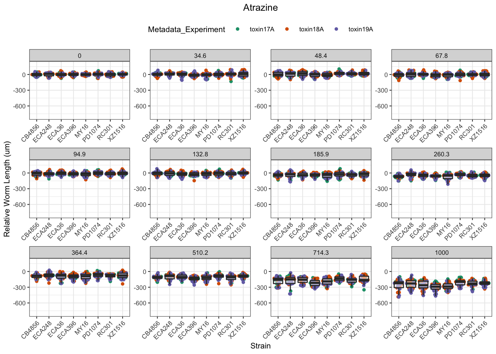

Dose-Response Assay Compilation
Last updated: 2021-03-14
Checks: 6 1
Knit directory: toxin_dose_responses/
This reproducible R Markdown analysis was created with workflowr (version 1.6.2). The Checks tab describes the reproducibility checks that were applied when the results were created. The Past versions tab lists the development history.
Great! Since the R Markdown file has been committed to the Git repository, you know the exact version of the code that produced these results.
Great job! The global environment was empty. Objects defined in the global environment can affect the analysis in your R Markdown file in unknown ways. For reproduciblity it’s best to always run the code in an empty environment.
The command set.seed(20210305) was run prior to running the code in the R Markdown file. Setting a seed ensures that any results that rely on randomness, e.g. subsampling or permutations, are reproducible.
Great job! Recording the operating system, R version, and package versions is critical for reproducibility.
Nice! There were no cached chunks for this analysis, so you can be confident that you successfully produced the results during this run.
Using absolute paths to the files within your workflowr project makes it difficult for you and others to run your code on a different machine. Change the absolute path(s) below to the suggested relative path(s) to make your code more reproducible.
| absolute | relative |
|---|---|
| ~/Documents/projects/toxin_dose_responses/ | . |
Great! You are using Git for version control. Tracking code development and connecting the code version to the results is critical for reproducibility.
The results in this page were generated with repository version 3f4a99b. See the Past versions tab to see a history of the changes made to the R Markdown and HTML files.
Note that you need to be careful to ensure that all relevant files for the analysis have been committed to Git prior to generating the results (you can use wflow_publish or wflow_git_commit). workflowr only checks the R Markdown file, but you know if there are other scripts or data files that it depends on. Below is the status of the Git repository when the results were generated:
Ignored files:
Ignored: .DS_Store
Ignored: .Rhistory
Ignored: analysis/.DS_Store
Untracked files:
Untracked: data/drugclasses.csv
Untracked: output/Aldicarb_EC10.csv
Untracked: output/Aldicarb_EC50.csv
Untracked: output/Aldicarb_EC90.csv
Untracked: output/Arsenic trioxide_EC10.csv
Untracked: output/Atrazine_EC10.csv
Untracked: output/Atrazine_EC50.csv
Untracked: output/Cadmium dichloride_EC10.csv
Untracked: output/Cadmium dichloride_EC50.csv
Untracked: output/Cadmium dichloride_EC90.csv
Untracked: output/Carbaryl_EC10.csv
Untracked: output/Carbaryl_EC50.csv
Untracked: output/Carbaryl_EC90.csv
Untracked: output/Carboxin_EC10.csv
Untracked: output/Carboxin_EC50.csv
Untracked: output/Carboxin_EC90.csv
Untracked: output/Chlorfenapyr_EC10.csv
Untracked: output/Chlorfenapyr_EC50.csv
Untracked: output/Chlorfenapyr_EC90.csv
Untracked: output/Chlorpyrifos_EC10.csv
Untracked: output/Chlorpyrifos_EC50.csv
Untracked: output/Chlorpyrifos_EC90.csv
Untracked: output/Copper(II) chloride_EC10.csv
Untracked: output/Copper(II) chloride_EC50.csv
Untracked: output/Copper(II) chloride_EC90.csv
Untracked: output/H2.plot.20210306.png
Untracked: output/H2.plot.20210308.png
Untracked: output/Lead(II) nitrate_EC10.csv
Untracked: output/Methomyl_EC10.csv
Untracked: output/Methomyl_EC50.csv
Untracked: output/Methomyl_EC90.csv
Untracked: output/Methylmercury dichloride_EC10.csv
Untracked: output/Methylmercury dichloride_EC50.csv
Untracked: output/Methylmercury dichloride_EC90.csv
Untracked: output/Nickel dichloride_EC10.csv
Untracked: output/Nickel dichloride_EC50.csv
Untracked: output/Nickel dichloride_EC90.csv
Untracked: output/Paraquat_EC10.csv
Untracked: output/Paraquat_EC50.csv
Untracked: output/Paraquat_EC90.csv
Untracked: output/Pyraclostrobin_EC10.csv
Untracked: output/Pyraclostrobin_EC50.csv
Untracked: output/Pyraclostrobin_EC90.csv
Untracked: output/Silver nitrate_EC10.csv
Untracked: output/Silver nitrate_EC50.csv
Untracked: output/Triphenyl phosphate_EC10.csv
Untracked: output/Triphenyl phosphate_EC50.csv
Untracked: output/Triphenyl phosphate_EC90.csv
Untracked: output/Zinc dichloride_EC10.csv
Untracked: output/Zinc dichloride_EC50.csv
Untracked: output/Zinc dichloride_EC90.csv
Untracked: output/cv.control.wells.csv
Unstaged changes:
Modified: analysis/doseresponsemodels.Rmd
Note that any generated files, e.g. HTML, png, CSS, etc., are not included in this status report because it is ok for generated content to have uncommitted changes.
These are the previous versions of the repository in which changes were made to the R Markdown (analysis/toxin8strains.Rmd) and HTML (docs/toxin8strains.html) files. If you’ve configured a remote Git repository (see ?wflow_git_remote), click on the hyperlinks in the table below to view the files as they were in that past version.
| File | Version | Author | Date | Message |
|---|---|---|---|---|
| Rmd | 3f4a99b | sam-widmayer | 2021-03-14 | integrate toxin22 results |
| html | 212e0ae | sam-widmayer | 2021-03-08 | Build site. |
| html | cb6e132 | sam-widmayer | 2021-03-06 | Build site. |
| Rmd | 46c9647 | sam-widmayer | 2021-03-06 | static working directory |
| Rmd | 41bdaa0 | sam-widmayer | 2021-03-05 | dynamic working directory |
| Rmd | 0c9d312 | sam-widmayer | 2021-03-05 | initiate toxin DRC analysis repo |
Purpose:
- Compile past assay results.
- Provide dose-response curves for each toxin.
Analysis Date: March 14, 2021
Assay Summary

| Version | Author | Date |
|---|---|---|
| cb6e132 | sam-widmayer | 2021-03-06 |

| Version | Author | Date |
|---|---|---|
| cb6e132 | sam-widmayer | 2021-03-06 |

| Version | Author | Date |
|---|---|---|
| cb6e132 | sam-widmayer | 2021-03-06 |
Metadata_Experiment bleach median cv.censor
1 toxin09A 1 0.4002814 0
2 toxin10A 1 0.4197976 0
3 toxin11A 1 0.4367000 0
4 toxin14A 1 0.3306423 0
5 toxin14A 2 0.6350979 1
6 toxin14A 3 0.3307924 0
7 toxin14B 1 0.3537066 0
8 toxin14B 2 0.6953160 1
9 toxin14B 3 0.4131710 0
10 toxin15A 1 0.3776043 0
11 toxin15A 2 0.3253871 0
12 toxin15A 3 0.5951538 1
13 toxin15B 1 0.3060126 0
14 toxin15B 2 0.3803403 0
15 toxin15B 3 0.6178760 1
16 toxin16A 1 0.3058102 0
17 toxin16A 2 0.6505324 1
18 toxin16A 3 0.6474844 1
19 toxin17A 1 0.3215600 0
20 toxin17A 2 0.5741834 1
21 toxin17A 3 0.3411714 0
22 toxin18A 1 0.3136715 0
23 toxin18A 2 0.3292525 0
24 toxin18A 3 0.3363887 0
25 toxin19A 1 0.3300594 0
26 toxin19A 2 0.3203313 0
27 toxin19A 3 0.3406528 0
28 toxin22A 1 0.2672247 0
29 toxin22A 2 0.3009577 0
30 toxin22A 3 0.2715390 0 Df Sum Sq Mean Sq F value Pr(>F)
assay 11 1.6031 0.1457 12.902 < 2e-16 ***
as.factor(bleach) 2 0.8067 0.4033 35.708 5.49e-14 ***
strain 7 0.1108 0.0158 1.401 0.207
assay:as.factor(bleach) 16 1.8032 0.1127 9.977 < 2e-16 ***
Residuals 200 2.2591 0.0113
---
Signif. codes: 0 '***' 0.001 '**' 0.01 '*' 0.05 '.' 0.1 ' ' 1Silver

| Version | Author | Date |
|---|---|---|
| cb6e132 | sam-widmayer | 2021-03-06 |

| Version | Author | Date |
|---|---|---|
| cb6e132 | sam-widmayer | 2021-03-06 |

| Version | Author | Date |
|---|---|---|
| cb6e132 | sam-widmayer | 2021-03-06 |
Cadmium
[1] "Excluding toxin09A: Inconsistent Response"
| Version | Author | Date |
|---|---|---|
| cb6e132 | sam-widmayer | 2021-03-06 |

| Version | Author | Date |
|---|---|---|
| cb6e132 | sam-widmayer | 2021-03-06 |

| Version | Author | Date |
|---|---|---|
| cb6e132 | sam-widmayer | 2021-03-06 |
Copper

| Version | Author | Date |
|---|---|---|
| cb6e132 | sam-widmayer | 2021-03-06 |

| Version | Author | Date |
|---|---|---|
| cb6e132 | sam-widmayer | 2021-03-06 |
| Version | Author | Date |
|---|---|---|
| cb6e132 | sam-widmayer | 2021-03-06 |
Nickel

| Version | Author | Date |
|---|---|---|
| cb6e132 | sam-widmayer | 2021-03-06 |

| Version | Author | Date |
|---|---|---|
| cb6e132 | sam-widmayer | 2021-03-06 |

| Version | Author | Date |
|---|---|---|
| cb6e132 | sam-widmayer | 2021-03-06 |
Paraquat

| Version | Author | Date |
|---|---|---|
| cb6e132 | sam-widmayer | 2021-03-06 |

| Version | Author | Date |
|---|---|---|
| cb6e132 | sam-widmayer | 2021-03-06 |

| Version | Author | Date |
|---|---|---|
| cb6e132 | sam-widmayer | 2021-03-06 |
Zinc

| Version | Author | Date |
|---|---|---|
| cb6e132 | sam-widmayer | 2021-03-06 |

| Version | Author | Date |
|---|---|---|
| cb6e132 | sam-widmayer | 2021-03-06 |

| Version | Author | Date |
|---|---|---|
| cb6e132 | sam-widmayer | 2021-03-06 |
Pyraclostrobin
[1] "Excluding toxin11A: Inconsistent Response"
| Version | Author | Date |
|---|---|---|
| cb6e132 | sam-widmayer | 2021-03-06 |

| Version | Author | Date |
|---|---|---|
| cb6e132 | sam-widmayer | 2021-03-06 |

| Version | Author | Date |
|---|---|---|
| cb6e132 | sam-widmayer | 2021-03-06 |
Aldicarb

| Version | Author | Date |
|---|---|---|
| cb6e132 | sam-widmayer | 2021-03-06 |

| Version | Author | Date |
|---|---|---|
| cb6e132 | sam-widmayer | 2021-03-06 |

| Version | Author | Date |
|---|---|---|
| cb6e132 | sam-widmayer | 2021-03-06 |
Chlorfenapyr
[1] "Excluding toxin09A, toxin10A, toxin11A, toxin12A: No Response/Variable Dilution"
| Version | Author | Date |
|---|---|---|
| cb6e132 | sam-widmayer | 2021-03-06 |

| Version | Author | Date |
|---|---|---|
| cb6e132 | sam-widmayer | 2021-03-06 |

| Version | Author | Date |
|---|---|---|
| cb6e132 | sam-widmayer | 2021-03-06 |
Methomyl

| Version | Author | Date |
|---|---|---|
| cb6e132 | sam-widmayer | 2021-03-06 |

| Version | Author | Date |
|---|---|---|
| cb6e132 | sam-widmayer | 2021-03-06 |

| Version | Author | Date |
|---|---|---|
| cb6e132 | sam-widmayer | 2021-03-06 |
Methyl Mercury

| Version | Author | Date |
|---|---|---|
| cb6e132 | sam-widmayer | 2021-03-06 |

| Version | Author | Date |
|---|---|---|
| cb6e132 | sam-widmayer | 2021-03-06 |

| Version | Author | Date |
|---|---|---|
| cb6e132 | sam-widmayer | 2021-03-06 |
Triphenyl phosphate

| Version | Author | Date |
|---|---|---|
| cb6e132 | sam-widmayer | 2021-03-06 |

| Version | Author | Date |
|---|---|---|
| cb6e132 | sam-widmayer | 2021-03-06 |

| Version | Author | Date |
|---|---|---|
| cb6e132 | sam-widmayer | 2021-03-06 |
Arsenic trioxide

| Version | Author | Date |
|---|---|---|
| cb6e132 | sam-widmayer | 2021-03-06 |

| Version | Author | Date |
|---|---|---|
| cb6e132 | sam-widmayer | 2021-03-06 |

| Version | Author | Date |
|---|---|---|
| cb6e132 | sam-widmayer | 2021-03-06 |
Carbaryl

| Version | Author | Date |
|---|---|---|
| cb6e132 | sam-widmayer | 2021-03-06 |

| Version | Author | Date |
|---|---|---|
| cb6e132 | sam-widmayer | 2021-03-06 |

| Version | Author | Date |
|---|---|---|
| cb6e132 | sam-widmayer | 2021-03-06 |
Carboxin

| Version | Author | Date |
|---|---|---|
| cb6e132 | sam-widmayer | 2021-03-06 |

| Version | Author | Date |
|---|---|---|
| cb6e132 | sam-widmayer | 2021-03-06 |

| Version | Author | Date |
|---|---|---|
| cb6e132 | sam-widmayer | 2021-03-06 |
Chlorpyrifos
[1] "Excluding toxin17A: No Response"
| Version | Author | Date |
|---|---|---|
| cb6e132 | sam-widmayer | 2021-03-06 |

| Version | Author | Date |
|---|---|---|
| cb6e132 | sam-widmayer | 2021-03-06 |

| Version | Author | Date |
|---|---|---|
| cb6e132 | sam-widmayer | 2021-03-06 |
Lead (II) nitrate
%20nitrate-1.png)
| Version | Author | Date |
|---|---|---|
| cb6e132 | sam-widmayer | 2021-03-06 |
%20nitrate-2.png)
| Version | Author | Date |
|---|---|---|
| cb6e132 | sam-widmayer | 2021-03-06 |
%20nitrate-3.png)
| Version | Author | Date |
|---|---|---|
| cb6e132 | sam-widmayer | 2021-03-06 |
Atrazine
[1] "Excluding toxin16A: Inaccurate Dilution Series"
| Version | Author | Date |
|---|---|---|
| cb6e132 | sam-widmayer | 2021-03-06 |

| Version | Author | Date |
|---|---|---|
| cb6e132 | sam-widmayer | 2021-03-06 |

| Version | Author | Date |
|---|---|---|
| cb6e132 | sam-widmayer | 2021-03-06 |
EC Estimates

| Version | Author | Date |
|---|---|---|
| cb6e132 | sam-widmayer | 2021-03-06 |

| Version | Author | Date |
|---|---|---|
| cb6e132 | sam-widmayer | 2021-03-06 |

| Version | Author | Date |
|---|---|---|
| cb6e132 | sam-widmayer | 2021-03-06 |

| Version | Author | Date |
|---|---|---|
| cb6e132 | sam-widmayer | 2021-03-06 |


Summary Tables
Table: Aldicarb Estimates
Strain Weibull Log-Logistic Lognormal
------- ------------- ------------- -------------
ECA396 115.93±10.69 124±10.14 122.69±9.62
CB4856 117.03±10.86 127.8±10.62 127.06±9.99
ECA36 141.24±10.94 153.7±10.22 154.55±10.2
MY16 70.88±6.75 75.61±5.63 75.51±5.4
XZ1516 88.26±11.96 103.23±12.61 106.18±12.35
RC301 81.58±6.96 92.4±6.46 92.52±6.19
PD1074 84.01±5.4 97.64±4.96 98.86±4.84
ECA248 93.07±10.98 107.73±10.06 109.63±9.68
Table: Aldicarb Estimates
Strain Weibull Log-Logistic Lognormal
------- ------------- ------------- -------------
ECA396 353.62±18.18 348.91±19.81 349.02±20.1
CB4856 365.8±16.01 359.93±17.68 354.85±17.53
ECA36 402.54±15.34 393.69±16.57 393.51±16.42
MY16 207.83±9.88 204.35±10.2 205.21±10.2
XZ1516 357.4±21 353.31±23.63 345.71±22.67
RC301 270.2±12.53 263.54±11.81 263.67±11.86
PD1074 271.33±8.87 263.94±7.88 263.8±7.91
ECA248 341.91±22.28 330.47±22.2 332.64±21.88
Table: Aldicarb Estimates
Strain Weibull Log-Logistic Lognormal
------- ------------- --------------- ---------------
ECA396 719.79±61.92 981.75±123.98 992.89±124.08
CB4856 756.27±56.41 1013.64±113.62 990.99±106.18
ECA36 784.67±52.68 1008.44±100.63 1001.92±97.57
MY16 412.5±36.73 552.32±62.14 557.72±61.07
XZ1516 871.45±90.87 1209.28±200.61 1125.56±172.51
RC301 579.61±50.43 751.61±77.97 751.39±75.86
PD1074 572.76±37.1 713.43±52.09 703.89±49.71
ECA248 783.49±96.35 1013.78±158.22 1009.31±148.09
Table: Arsenic trioxide Estimates
Strain Weibull Log-Logistic Lognormal
------- -------- ------------- --------------
MY16 NA NA 160.67±145.55
Table: Atrazine Estimates
Strain Weibull Log-Logistic Lognormal
------- -------------- -------------- --------------
PD1074 466.22±485.95 662.6±714.11 NA
XZ1516 207.41±30.05 247.85±44.5 300.35±107.71
RC301 157.38±13.76 193.76±23.71 236.31±66.08
CB4856 133.06±17.69 164.9±28 200.37±69.55
ECA36 197.93±43.98 263.15±77.94 416.45±311.45
ECA396 413.79±447.78 679.03±670.12 NA
Table: Atrazine Estimates
Strain Weibull Log-Logistic Lognormal
------- -------------- -------------- ----------
XZ1516 676.67±158.64 882.92±285.38 NA
RC301 544.44±81.1 751.76±184.58 NA
CB4856 552.98±129.78 749.71±255.87 NA
ECA36 779.58±263.89 NA NA
Table: Cadmium dichloride Estimates
Strain Weibull Log-Logistic Lognormal
------- ----------- ------------- -----------
MY16 21.9±1.71 24.79±1.81 24.72±1.69
XZ1516 21.42±1.67 24.18±1.69 24.62±1.67
PD1074 20.31±1.13 23.31±1.2 23.63±1.14
ECA36 28.58±1.84 31.54±1.83 32.19±1.88
ECA396 25.79±1.83 28.71±1.87 29.01±1.86
RC301 23.48±1.9 26.51±2.08 27.03±2.08
ECA248 18.32±1.34 21.2±1.43 21.92±1.37
CB4856 14.5±1.18 16.96±1.24 17.36±1.22
Table: Cadmium dichloride Estimates
Strain Weibull Log-Logistic Lognormal
------- ----------- ------------- -----------
MY16 53.58±2.73 53.24±2.59 53.02±2.6
XZ1516 61.76±3 63.13±4.42 62.57±4.52
PD1074 55.07±1.82 54.75±2.08 54.26±2.02
ECA36 67.83±2.16 67.45±2.81 66.43±2.62
ECA396 63.52±2.48 62.65±3.06 62.05±2.91
RC301 60.8±2.42 61.14±3.11 60.09±2.94
ECA248 49.4±1.85 49.74±2.05 48.73±1.93
CB4856 49.74±2.51 51.43±3.51 50.72±3.59
Table: Cadmium dichloride Estimates
Strain Weibull Log-Logistic Lognormal
------- ------------ ------------- -------------
MY16 94.77±8.81 114.32±13.69 113.7±12.58
XZ1516 121.27±9.49 164.8±25.99 159.01±25.41
PD1074 104.01±5.98 128.57±12.05 124.59±10.78
ECA36 117.65±5.62 144.26±14.26 137.09±12.78
ECA396 112.82±6.74 136.69±15.76 132.71±14.19
RC301 111.49±7.17 140.98±18.51 133.55±16.22
ECA248 92.94±6.55 116.7±12.33 108.34±10.16
CB4856 109.1±9.34 155.93±24.55 148.16±23.49
Table: Carbaryl Estimates
Strain Weibull Log-Logistic Lognormal
------- -------------- -------------- --------------
RC301 134.99±12.32 184.75±27.65 266.56±104.72
MY16 102.4±4.79 118.9±4.6 122.84±4.38
XZ1516 120.84±5.65 141.47±5.76 147.81±6.37
PD1074 405.97±331.53 712.34±810.51 NA
ECA248 187.18±12.14 232.29±23.89 293.36±79.54
CB4856 189.26±8.34 214.14±8.73 222.86±11.36
ECA396 109.72±6.31 133.78±8.44 144.31±12.7
ECA36 189.16±12.29 238.08±26 328.1±114.97
Table: Carbaryl Estimates
Strain Weibull Log-Logistic Lognormal
------- -------------- -------------- -------------
RC301 597.55±103.03 974.93±273.99 NA
MY16 323.94±10.35 359.89±19.57 358.81±22.63
XZ1516 395.35±19.16 474.18±41.95 500.52±62.33
ECA248 585.44±71.01 823.18±173.6 NA
CB4856 484.83±22.64 573.89±50.32 629.52±90.57
ECA396 418.18±37.57 542.91±85.82 613.2±151.12
ECA36 595.57±74.55 860.54±189.68 NA
Table: Carbaryl Estimates
Strain Weibull Log-Logistic Lognormal
------- -------------- ------------- ----------
MY16 674.84±39.18 NA NA
XZ1516 841.45±68.19 NA NA
CB4856 882.94±67.35 NA NA
ECA396 981.02±136.95 NA NA
Table: Carboxin Estimates
Strain Weibull Log-Logistic Lognormal
------- ------------- ------------- -------------
RC301 212.04±13.65 234.24±13.71 237.57±13.49
MY16 202.22±12.29 221.97±12.01 225.33±11.77
XZ1516 230.65±16.41 262.22±15.83 265.72±15.34
PD1074 265.57±24.78 299.98±23.62 308.24±24.92
ECA248 242.35±20.27 269.74±19.09 273.34±18.4
CB4856 186.33±14.42 208.58±14.07 212.31±13.49
ECA396 254.57±12.38 277.82±12.06 281.22±11.85
ECA36 333.38±25.47 366.64±25.28 369.6±24.67
Table: Carboxin Estimates
Strain Weibull Log-Logistic Lognormal
------- ------------- -------------- ---------------
RC301 483.34±14.87 486.29±18.06 479.67±17.59
MY16 507.04±15.07 521.11±20.94 512.18±20.92
XZ1516 613.62±25.4 642.59±36.46 642±40.32
PD1074 785.46±53.78 942.47±133.32 1011.57±224.12
ECA248 647.37±32.8 693.17±53.73 692.22±61.91
CB4856 526.86±22.53 552.68±34.07 542.01±34.73
ECA396 523.57±12.24 520.83±14.02 516.26±13.63
ECA36 686.68±28.61 683.94±33.76 678.16±32.9
Table: Carboxin Estimates
Strain Weibull Log-Logistic Lognormal
------- --------------- --------------- ---------------
RC301 817.13±44.34 1009.56±92.62 968.46±84.21
MY16 910.85±48.06 1223.38±118.83 1164.21±111.62
XZ1516 1144.75±91.47 1574.75±214.79 1551.13±224.94
PD1074 1567.63±186.59 NA NA
ECA248 1210.86±111.8 1781.26±309.62 1753.05±340.02
CB4856 1021.81±76.81 1464.47±207.55 1383.69±196.76
ECA396 828.99±33.93 976.38±63.78 947.77±58.3
ECA36 1088.29±77.32 1275.82±148.06 1244.31±136.71
Table: Chlorfenapyr Estimates
Strain Weibull Log-Logistic Lognormal
------- ---------- ------------- ----------
ECA248 0.19±0.01 0.21±0.01 0.21±0.01
XZ1516 0.31±0.02 0.36±0.02 0.36±0.02
ECA36 0.9±0.04 1.04±0.07 1.03±0.04
CB4856 0.31±0.01 0.32±0.01 0.31±0.01
ECA396 0.52±0.01 0.54±0.01 0.55±0.01
PD1074 0.36±0.02 0.35±0.01 0.34±0.01
RC301 0.23±0.01 0.24±0.01 0.24±0.01
MY16 0.23±0.01 0.24±0.01 0.25±0.01
Table: Chlorfenapyr Estimates
Strain Weibull Log-Logistic Lognormal
------- ---------- ------------- ----------
ECA248 0.48±0.01 0.47±0.01 0.47±0.01
XZ1516 0.65±0.02 0.64±0.01 0.64±0.01
ECA36 1.53±0.05 1.38±0.1 1.43±0.05
CB4856 0.58±0.01 0.58±0.01 0.57±0.01
ECA396 0.83±0.01 0.77±0.02 0.77±0.01
PD1074 0.6±0.01 0.61±0.01 0.61±0.01
RC301 0.48±0.01 0.47±0.01 0.46±0.01
MY16 0.52±0.01 0.51±0.01 0.5±0.01
Table: Chlorfenapyr Estimates
Strain Weibull Log-Logistic Lognormal
------- ---------- ------------- ----------
ECA248 0.88±0.03 1.07±0.06 1.04±0.05
XZ1516 1.03±0.06 1.12±0.07 1.13±0.06
ECA36 2.13±0.14 1.83±0.38 2±0.19
CB4856 0.87±0.03 1.06±0.04 1.06±0.04
ECA396 1.13±0.03 1.09±0.05 1.1±0.04
PD1074 0.82±0.03 1.06±0.04 1.08±0.04
RC301 0.78±0.02 0.92±0.03 0.89±0.03
MY16 0.86±0.04 1.05±0.06 1.03±0.05
Table: Chlorpyrifos Estimates
Strain Weibull Log-Logistic Lognormal
------- ------------ ------------- ----------
RC301 15.65±69.09 NA NA
XZ1516 2.55±0.16 2.96±0.21 3.21±0.41
PD1074 0.82±0.43 1.94±1.5 7.92±10.3
ECA248 2.35±1.85 4.2±3.8 NA
CB4856 4.55±8.28 7.2±7.15 NA
ECA396 1.16±1.01 2.2±2.14 7.53±13.2
ECA36 1.67±0.15 2.08±0.25 2.49±0.55
MY16 NA 10.98±21.5 NA
Table: Chlorpyrifos Estimates
Strain Weibull Log-Logistic Lognormal
------- ------------ ------------- -----------
XZ1516 6.9±0.54 8.79±1.3 10.87±3.21
PD1074 18.47±14.33 NA NA
ECA396 15.67±18.38 NA NA
ECA36 6.96±1.08 9.61±2.2 14.19±6.29
Table: Chlorpyrifos Estimates
Strain Weibull Log-Logistic Lognormal
------- ----------- ------------- ----------
XZ1516 13.01±1.53 NA NA
ECA36 17.33±3.6 NA NA
Table: Copper(II) chloride Estimates
Strain Weibull Log-Logistic Lognormal
------- ----------- ------------- -----------
ECA396 43.31±3.01 46.5±2.42 47.05±2.24
CB4856 64.26±6.9 63.94±5.99 61.77±4.85
ECA36 51.2±4.93 52.75±3.94 52.57±3.46
MY16 64.44±6.35 64.09±5.63 61.84±4.59
XZ1516 41.98±4.77 44.69±3.87 45.09±3.58
RC301 44.69±4.56 48.01±3.57 48.66±3.24
PD1074 52.12±4.37 52.63±3.67 52.23±3.25
ECA248 43.77±4.02 45.9±3.35 46.1±3.18
Table: Copper(II) chloride Estimates
Strain Weibull Log-Logistic Lognormal
------- ------------ ------------- -------------
ECA396 96.4±3.41 107.86±8.17 112.47±13.46
CB4856 100.72±1.91 102.83±3.58 103.76±4.8
ECA36 96.79±2.64 101.93±5.48 102.33±6.99
MY16 100.1±1.8 101.69±3.04 102.25±3.98
XZ1516 93.45±4.62 103.08±10.75 105.05±15.55
RC301 98.18±4.71 110.34±11.96 115.8±20.87
PD1074 92.21±2.11 93.37±3 92.3±3.27
ECA248 91.68±2.82 97.61±5.78 97.59±7.44
Table: Copper(II) chloride Estimates
Strain Weibull Log-Logistic Lognormal
------- ------------- ------------- -------------
ECA396 160.54±12.06 NA NA
CB4856 134.12±10.06 165.37±23.55 174.3±25.66
ECA36 145.25±10.21 196.96±29.38 199.2±33.37
MY16 132.54±8.89 161.33±20.16 169.07±21.4
XZ1516 155.6±16.47 NA NA
RC301 162.13±17.74 NA NA
PD1074 132.66±6.26 165.63±15.39 163.13±15.03
ECA248 146.86±9.92 NA NA
Table: Lead(II) nitrate Estimates
Strain Weibull Log-Logistic Lognormal
------- -------------- -------------- ----------
ECA36 226.93±128.54 495.47±448.34 NA
Table: Methomyl Estimates
Strain Weibull Log-Logistic Lognormal
------- ----------- ------------- -----------
ECA396 9.92±0.84 11.24±0.84 11.21±0.82
CB4856 9.99±1.09 11.16±1.07 11.22±1.05
ECA36 6.68±0.48 8.13±0.49 8.32±0.49
MY16 6.69±0.73 8.08±0.77 8.2±0.75
XZ1516 5.48±0.68 6.77±0.71 6.91±0.7
RC301 7.35±0.66 8.73±0.67 8.8±0.65
PD1074 6.38±0.63 7.42±0.65 7.57±0.63
ECA248 14.13±1.31 15.07±1.13 15.12±1.15
Table: Methomyl Estimates
Strain Weibull Log-Logistic Lognormal
------- ----------- ------------- -----------
ECA396 35.82±1.47 35.73±1.64 35.2±1.63
CB4856 31.29±1.48 30.59±1.6 30.2±1.57
ECA36 33.84±1.25 34.41±1.47 33.95±1.46
MY16 34.57±2.05 34.78±2.43 34.19±2.39
XZ1516 30.41±2.23 29.39±2.5 29.33±2.42
RC301 33.14±1.61 32.82±1.74 32.48±1.71
PD1074 28.79±1.44 28.29±1.65 27.71±1.58
ECA248 37.86±1.45 37.64±1.63 37.47±1.64
Table: Methomyl Estimates
Strain Weibull Log-Logistic Lognormal
------- ------------ ------------- -------------
ECA396 81.2±6.08 113.58±12.3 110.57±11.66
CB4856 64.81±5.25 83.83±10.22 81.28±9.39
ECA36 95.15±6.65 145.57±15.24 138.64±14.23
MY16 98.44±10.2 149.79±24.27 142.49±22.54
XZ1516 90.62±11.43 127.55±24.56 124.47±22.57
RC301 86.54±7.68 123.4±15.4 119.91±14.35
PD1074 75.22±6.48 107.94±14.59 101.47±12.92
ECA248 70.95±5.36 93.99±9.78 92.84±9.75
Table: Methylmercury dichloride Estimates
Strain Weibull Log-Logistic Lognormal
------- ---------- ------------- ----------
ECA396 0.8±0.12 1.04±0.14 1.1±0.14
CB4856 0.44±0.08 0.62±0.09 0.65±0.09
ECA36 0.92±0.12 1.2±0.14 1.26±0.14
MY16 0.43±0.09 0.63±0.12 0.67±0.12
XZ1516 0.39±0.09 0.55±0.1 0.59±0.1
RC301 0.84±0.16 1.11±0.19 1.16±0.19
PD1074 0.91±0.11 1.17±0.13 1.22±0.13
ECA248 0.25±0.06 0.38±0.08 0.41±0.08
Table: Methylmercury dichloride Estimates
Strain Weibull Log-Logistic Lognormal
------- ----------- ------------- -----------
ECA396 8.98±0.67 9.54±0.96 9.01±0.9
CB4856 6.51±0.53 6.96±0.74 6.61±0.7
ECA36 11.61±0.75 13.15±1.29 12.5±1.3
MY16 4.35±0.37 4.29±0.41 4.17±0.38
XZ1516 10.61±1.36 16.84±4.41 17.4±5.98
RC301 11.88±1.17 14.27±2.3 13.73±2.47
PD1074 10.46±0.62 11.48±0.96 10.9±0.94
ECA248 5.76±0.69 6.34±1.07 5.96±1
Table: Methylmercury dichloride Estimates
Strain Weibull Log-Logistic Lognormal
------- ------------ ------------- -------------
ECA396 41.8±5.29 87.51±20.86 73.47±16.79
CB4856 36.16±5.28 77.96±20.66 67.08±16.91
ECA36 58.33±6.56 144.01±33.12 124.26±29.32
MY16 18.96±3.03 29.34±7.43 26.08±6.05
XZ1516 87.01±20.22 NA NA
RC301 64.44±11.37 183.44±70.16 161.97±67.41
PD1074 49.66±5.16 112.28±22.3 97.14±19.3
ECA248 42.44±9.09 106.98±42.97 86.84±33.28
Table: Nickel dichloride Estimates
Strain Weibull Log-Logistic Lognormal
------- -------------- ------------- ------------
ECA396 43.91±2.63 45.31±2.23 45.97±2.04
CB4856 41.28±2.11 43.07±1.79 43.91±1.67
ECA36 54.71±4.68 55.94±3.83 55.63±3.33
MY16 38.09±2.56 42.31±2.29 43.58±2.67
XZ1516 142.07±274.32 36.59±5.23 42.86±65.12
RC301 55.09±5.06 60.64±3.65 64.08±7.95
PD1074 57.94±4.61 58.29±3.84 57.29±3.25
ECA248 42.57±3.14 43.71±2.68 43.89±2.51
Table: Nickel dichloride Estimates
Strain Weibull Log-Logistic Lognormal
------- ------------- ------------- -------------
ECA396 81.75±1.89 80.3±2.32 79.05±2.18
CB4856 79.27±1.7 77.66±2.11 76.49±1.95
ECA36 97.84±2.16 101.35±4.08 101.27±4.88
MY16 96.63±5.16 113.6±12.18 124.17±22.71
RC301 114.83±11.33 134.1±27.95 158±66.08
PD1074 97.62±1.74 99.79±2.91 99.64±3.49
ECA248 84.16±2.56 84.53±3.7 83.11±3.75
XZ1516 NA 111.69±36.87 187.88±773.8
Table: Nickel dichloride Estimates
Strain Weibull Log-Logistic Lognormal
------- ------------- ------------- -------------
ECA396 121.48±3.92 142.28±8.7 135.92±7.57
CB4856 120.14±3.59 140.01±7.99 133.24±6.89
ECA36 141.72±8.55 183.6±22.36 184.36±23.4
MY16 174.89±17.38 NA NA
RC301 183.37±36.27 NA NA
PD1074 136.11±6.99 170.82±16.93 173.29±17.33
ECA248 129.93±6.08 163.45±15.62 157.39±15.39
Table: Paraquat Estimates
Strain Weibull Log-Logistic Lognormal
------- ----------- ------------- -----------
MY16 21.49±2.2 31.49±2.53 32.89±2.43
XZ1516 46.56±5.67 56.97±5.82 58.37±5.55
CB4856 27.94±2.8 37.66±2.74 38.24±2.54
RC301 15.73±1.83 22.08±1.92 23.33±1.84
PD1074 19.37±1.72 27.79±1.9 29.12±1.81
ECA248 13.46±1.33 19.33±1.5 20.46±1.46
ECA36 23.97±2.44 33.86±2.56 35.13±2.42
ECA396 14.16±1.45 20.47±1.56 21.4±1.48
Table: Paraquat Estimates
Strain Weibull Log-Logistic Lognormal
------- ------------- ------------- -------------
MY16 247.79±20.27 223.77±19.92 234.06±20.65
XZ1516 388.08±35.61 390.27±48.91 390.29±50.58
CB4856 219.28±18.97 192.21±14.64 203.73±14.96
RC301 190.82±16.68 169.31±16.64 174.07±15.94
PD1074 234.72±17.46 210.58±17.45 220.31±17.84
ECA248 190.84±14.44 185.4±16.94 188.51±17.08
ECA36 229.29±20.19 201.69±17.61 214.1±18.19
ECA396 163.12±11.88 141.94±11 147.09±10.57
Table: Paraquat Estimates
Strain Weibull Log-Logistic Lognormal
------- --------------- --------------- ---------------
MY16 1177.07±168.78 1590.36±321.63 1665.68±319.5
XZ1516 1499.05±216.62 2673.26±665.82 2609.49±663.48
CB4856 815.1±128.85 981.14±169.08 1085.4±170.95
RC301 936.14±139.24 1298.17±277.65 1298.95±249.99
PD1074 1150.8±145.49 1595.89±292.17 1667±286.11
ECA248 1034.35±133.48 1778.13±356.19 1737.21±334.18
ECA36 966.76±151.63 1201.27±236.27 1304.87±238.47
ECA396 774.48±97.75 984.14±171.96 1011.07±156.57
Table: Pyraclostrobin Estimates
Strain Weibull Log-Logistic Lognormal
------- ----------- ------------- -----------
ECA396 5.13±0.45 7.01±0.48 7.4±0.47
CB4856 7.72±1.18 10.95±1.4 11.59±1.39
ECA36 11.85±0.97 14.8±0.94 15.1±0.92
MY16 7.6±0.79 10.91±0.93 11.78±0.98
XZ1516 10.37±1.27 14.64±1.54 15.85±1.71
RC301 15.04±2.5 19.03±2.54 19.18±2.44
PD1074 9.09±0.97 12.46±1.09 13.08±1.07
ECA248 8.59±1.28 12.33±1.54 13.27±1.6
Table: Pyraclostrobin Estimates
Strain Weibull Log-Logistic Lognormal
------- ------------- ------------- -------------
ECA396 79.98±6.64 88.49±9.27 93.88±11.17
CB4856 121.28±17.04 142.59±28.54 156.05±38.93
ECA36 79.93±3.6 81.76±4.06 80.96±4.1
MY16 128.89±14.05 163.22±25.87 185.64±39
XZ1516 163.82±21.13 220.54±45.46 258.06±75.48
RC301 101.77±11 102.56±12.01 104.29±12.65
PD1074 118.27±11.33 136.07±17.63 144.43±22.57
ECA248 144.56±20.86 181.28±39.94 202.61±59.58
Table: Pyraclostrobin Estimates
Strain Weibull Log-Logistic Lognormal
------- -------------- -------------- --------------
ECA396 460.65±62.67 1116.4±236.96 1191.5±279.08
CB4856 701.75±165.3 NA NA
ECA36 269.73±22.6 451.81±53.31 434.1±50.62
MY16 783.01±142.39 NA NA
XZ1516 951.12±202.66 NA NA
RC301 344.23±70.41 552.85±150.04 567.18±153.92
PD1074 606.82±99.42 1485.41±399.5 NA
ECA248 873.78±212.8 NA NA
Table: Silver nitrate Estimates
Strain Weibull Log-Logistic Lognormal
------- ------------ ------------- ------------
MY16 3.6±1.72 7.15±4.63 17.08±30.22
XZ1516 9.35±4.15 15.53±8.26 28.99±30.86
ECA36 12.92±9.29 24.37±21.45 93.8±187.3
ECA396 29.26±34.8 56.67±71.55 NA
RC301 13.56±12.7 33.27±39.68 NA
CB4856 19.49±16.06 42.03±42.1 NA
Table: Silver nitrate Estimates
Strain Weibull Log-Logistic Lognormal
------- -------------- ------------- ----------
MY16 107.82±87.15 NA NA
XZ1516 163.97±108.06 NA NA
ECA36 234.34±231.94 NA NA
Table: Triphenyl phosphate Estimates
Strain Weibull Log-Logistic Lognormal
------- ---------- ------------- ----------
ECA396 1.63±0.13 2.09±0.15 2.16±0.15
CB4856 2.1±0.22 2.64±0.25 2.77±0.26
ECA36 2.06±0.25 2.53±0.27 2.6±0.28
MY16 0.47±0.06 0.68±0.08 0.73±0.08
XZ1516 3.15±0.51 3.77±0.57 3.92±0.61
RC301 2.42±0.37 2.98±0.41 3.11±0.42
PD1074 3.78±0.35 4.39±0.36 4.49±0.36
ECA248 1.72±0.17 2.17±0.19 2.24±0.19
Table: Triphenyl phosphate Estimates
Strain Weibull Log-Logistic Lognormal
------- ----------- ------------- -----------
ECA396 16.43±0.96 21.34±2.16 22.07±2.93
CB4856 18.33±1.14 21.69±2.26 20.97±2.5
ECA36 18.31±1.12 22.62±2.53 22.5±3.18
MY16 11.34±1.15 17.19±3.3 18.03±4.53
XZ1516 18.96±1.53 20.88±2.51 19.97±2.51
RC301 15.93±1.14 17.27±1.76 16.66±1.78
PD1074 19.83±0.92 20.82±1.32 20.1±1.3
ECA248 16.21±0.89 19.33±1.76 19±2.06
Table: Triphenyl phosphate Estimates
Strain Weibull Log-Logistic Lognormal
------- ------------ ------------- -------------
ECA396 71.51±6.99 NA NA
CB4856 72.9±7.86 178.23±41.57 158.68±41.76
ECA36 73.66±8.5 NA 194.94±62.58
MY16 86.48±15.06 NA NA
XZ1516 59.49±8.4 115.63±33.75 101.68±31.01
RC301 52.93±7.17 99.95±25.83 89.41±23.5
PD1074 57.01±4.6 98.74±14.63 90.02±13.34
ECA248 67.61±6.66 172.04±35.78 161.52±38.98
Table: Zinc dichloride Estimates
Strain Weibull Log-Logistic Lognormal
------- ------------ -------------- --------------
MY16 49.97±2.99 64.15±5.85 86.83±25.16
XZ1516 53.15±3.33 62.9±3.86 68.77±7.46
PD1074 66.11±12.42 99.93±26.76 394.91±407.23
ECA36 53.45±2.91 66.27±4.86 81.66±16.27
ECA396 34.27±1.76 40.29±1.78 41.84±1.96
RC301 44.21±2.85 57.02±5.31 75.49±19.46
ECA248 51.07±3.11 61.77±4.16 71.18±11.2
CB4856 95.8±73.07 179.04±147.83 NA
Table: Zinc dichloride Estimates
Strain Weibull Log-Logistic Lognormal
------- ------------- ------------- --------------
MY16 200.37±22.5 301.04±62.22 NA
XZ1516 180.45±13.29 233.29±32.84 297.56±86.78
PD1074 327.1±95.31 NA NA
ECA36 197.2±18.25 278.34±46.86 NA
ECA396 136.22±5.76 166.62±13.56 185.5±24.6
RC301 192.15±22.05 289.38±58.28 NA
ECA248 181.68±15.06 246.68±40.07 354.12±135.93
Table: Zinc dichloride Estimates
Strain Weibull Log-Logistic Lognormal
------- ------------- ------------- ----------
XZ1516 393.24±48.17 NA NA
ECA396 328.27±23.63 NA NA [[1]]
NULL
[[2]]
NULL
[[3]]
NULL
[[4]]
NULL
[[5]]
NULL
[[6]]
NULL
[[7]]
NULL
[[8]]
NULL
[[9]]
NULL
[[10]]
NULL
[[11]]
NULL
[[12]]
NULL
[[13]]
NULL
[[14]]
NULL
[[15]]
NULL
[[16]]
NULL
[[17]]
NULL
[[18]]
NULL
[[19]]
NULL
[[20]]
NULL
[[21]]
NULL
[[22]]
NULL
[[23]]
NULL
[[24]]
NULL
[[25]]
NULL
[[26]]
NULL
[[27]]
NULL
[[28]]
NULL
[[29]]
NULL
[[30]]
NULL
[[31]]
NULL
[[32]]
NULL
[[33]]
NULL
[[34]]
NULL
[[35]]
NULL
[[36]]
NULL
[[37]]
NULL
[[38]]
NULL
[[39]]
NULL
[[40]]
NULL
[[41]]
NULL
[[42]]
NULL
[[43]]
NULL
[[44]]
NULL
[[45]]
NULL
[[46]]
NULL
[[47]]
NULL
[[48]]
NULL
sessionInfo()R version 4.0.4 (2021-02-15)
Platform: x86_64-apple-darwin17.0 (64-bit)
Running under: macOS Catalina 10.15.7
Matrix products: default
BLAS: /Library/Frameworks/R.framework/Versions/4.0/Resources/lib/libRblas.dylib
LAPACK: /Library/Frameworks/R.framework/Versions/4.0/Resources/lib/libRlapack.dylib
locale:
[1] en_US.UTF-8/en_US.UTF-8/en_US.UTF-8/C/en_US.UTF-8/en_US.UTF-8
attached base packages:
[1] stats graphics grDevices utils datasets methods base
other attached packages:
[1] RColorBrewer_1.1-2 RCurl_1.98-1.2 ddpcr_1.15 kableExtra_1.3.4
[5] knitr_1.31 drc_3.0-1 MASS_7.3-53 easyXpress_0.1.0
[9] forcats_0.5.1 stringr_1.4.0 dplyr_1.0.4 purrr_0.3.4
[13] readr_1.4.0 tidyr_1.1.2 tibble_3.1.0 ggplot2_3.3.3
[17] tidyverse_1.3.0 workflowr_1.6.2
loaded via a namespace (and not attached):
[1] TH.data_1.0-10 colorspace_2.0-0 ellipsis_0.3.1
[4] rio_0.5.16 rprojroot_2.0.2 fs_1.5.0
[7] rstudioapi_0.13 farver_2.0.3 fansi_0.4.2
[10] mvtnorm_1.1-1 lubridate_1.7.9.2 xml2_1.3.2
[13] codetools_0.2-18 splines_4.0.4 readbitmap_0.1.5
[16] jsonlite_1.7.2 broom_0.7.5 dbplyr_2.1.0
[19] png_0.1-7 compiler_4.0.4 httr_1.4.2
[22] backports_1.2.1 assertthat_0.2.1 bmp_0.3
[25] Matrix_1.3-2 cli_2.3.1 later_1.1.0.1
[28] htmltools_0.5.1.1 tools_4.0.4 igraph_1.2.6
[31] gtable_0.3.0 glue_1.4.2 rebus.base_0.0-3
[34] Rcpp_1.0.6 carData_3.0-4 cellranger_1.1.0
[37] jquerylib_0.1.3 vctrs_0.3.6 svglite_2.0.0
[40] xfun_0.21 rebus.datetimes_0.0-1 openxlsx_4.2.3
[43] rvest_0.3.6 lifecycle_1.0.0 rebus.numbers_0.0-1
[46] gtools_3.8.2 zoo_1.8-8 scales_1.1.1
[49] hms_1.0.0 promises_1.2.0.1 sandwich_3.0-0
[52] yaml_2.2.1 curl_4.3 sass_0.3.1
[55] stringi_1.5.3 imager_0.42.7 highr_0.8
[58] plotrix_3.8-1 tiff_0.1-6 zip_2.1.1
[61] bitops_1.0-6 rlang_0.4.10 pkgconfig_2.0.3
[64] systemfonts_1.0.1 evaluate_0.14 lattice_0.20-41
[67] labeling_0.4.2 cowplot_1.1.1 tidyselect_1.1.0
[70] magrittr_2.0.1 R6_2.5.0 generics_0.1.0
[73] multcomp_1.4-16 DBI_1.1.1 pillar_1.5.0
[76] haven_2.3.1 whisker_0.4 foreign_0.8-81
[79] withr_2.4.1 rebus_0.1-3 survival_3.2-7
[82] abind_1.4-5 rebus.unicode_0.0-2 modelr_0.1.8
[85] crayon_1.4.1 car_3.0-10 utf8_1.1.4
[88] rmarkdown_2.7 jpeg_0.1-8.1 grid_4.0.4
[91] readxl_1.3.1 data.table_1.14.0 git2r_0.28.0
[94] reprex_1.0.0 digest_0.6.27 webshot_0.5.2
[97] httpuv_1.5.5 munsell_0.5.0 viridisLite_0.3.0
[100] bslib_0.2.4